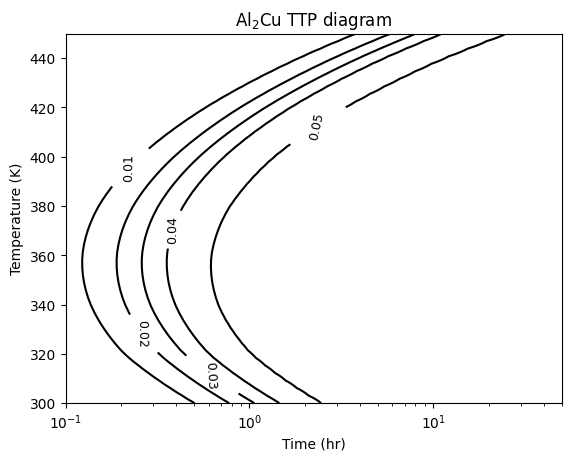
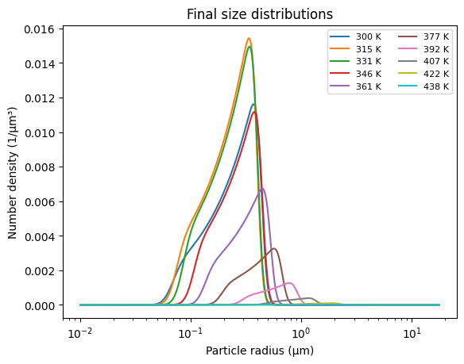

Al–Cu TTP diagram#
This worked example computes a time–temperature–precipitation (TTP) diagram for the \(\theta\)-phase \(\mathrm{Al}_2\mathrm{Cu}\) precipitate forming from a dilute Al–Cu matrix (4 wt% Cu), using the KWN (precipitation kinetics) catalog. A TTP diagram is a contour plot of precipitate volume fraction over temperature and time — so we run a batched KWN simulation across a grid of temperatures and read off the contours.
The example has two parts:
Thermodynamic tabulation (offline, pycalphad). The KWN driving force needs the matrix/precipitate equilibrium compositions and the matrix chemical potential as functions of temperature and Cu concentration. These come from a CALPHAD calculation. That step is shown below but commented out — it needs
pycalphadand a proprietary thermodynamic database — and its output is already baked into the input file as inline tables.TTP evaluation (NEML2). Loads the model and sweeps temperature × time. This half needs no pycalphad.
Part 1 — Thermodynamic tables (offline)#
Running this part requires pycalphad and the Liang & Schmid-Fetzer (2015)
database saved as AlCu-Liang-Schmid-Fetzer.tdb (supplemental material of
doi:10.1016/j.calphad.2015.10.004).
It is commented out here; the resulting tables are baked into model.i in Part 2,
so you can skip straight there. Uncomment to regenerate them.
# --- Offline: regenerate the CALPHAD tables (requires pycalphad + the .tdb) ---
# import numpy as np
# from pycalphad import Database, equilibrium, binplot, variables as v
# import matplotlib.pyplot as plt
#
# initial_cu_fraction = 0.01738 # 4 wt% Cu
# temperatures = (300, 800, 20) # (min, max, step) in K
# p = 101325 # Pa
# N = 1 # moles
# cu_range_consider = (0, 0.02, 0.00025) # matrix Cu range (min, max, step)
#
# # Load the database from Liang & Schmid-Fetzer (2015), saved alongside as
# # AlCu-Liang-Schmid-Fetzer.tdb (supplemental material of doi:10.1016/j.calphad.2015.10.004).
# dbf = Database("AlCu-Liang-Schmid-Fetzer.tdb")
# comps = ["CU", "AL"]
#
# # Phase diagram (sanity check against a reference Al-Cu diagram)
# binplot(dbf, comps, ["LIQUID", "FCC", "AL2CU"],
# {v.X("CU"): (0, 0.05, 0.005), v.T: (300, 1000, 10), v.P: p, v.N: N})
# plt.show()
#
# # Matrix <-> Al2Cu equilibrium vs temperature
# eq = equilibrium(dbf, comps, ["FCC", "AL2CU"],
# {v.X("CU"): initial_cu_fraction, v.T: temperatures, v.P: p, v.N: N})
# temperatures = eq.coords["T"].values
# eq_X_Cu_matrix = eq["X"][0, 0, :, 0, 0, 1].values
# eq_X_Cu_precipitate = eq["X"][0, 0, :, 0, 1, 1].values
# eq_chemical_potential = eq["MU"][0, 0, :, 0, 1].values
# eq_concentration_difference = eq_X_Cu_precipitate - eq_X_Cu_matrix
#
# # Matrix chemical potential over a (T, x_Cu) grid -> nucleation/growth driving force
# eq_matrix = equilibrium(dbf, comps, ["FCC"],
# {v.X("CU"): cu_range_consider, v.T: temperatures, v.P: p, v.N: N})
# matrix_cu_concentrations = eq_matrix.coords["X_CU"].values
# matrix_chemical_potential = eq_matrix["MU"][0, 0, :, :, 1].values
# chemical_driving_force = (
# (matrix_chemical_potential - eq_chemical_potential[:, None]) * eq_concentration_difference[:, None]
# )
#
# # These four arrays (temperatures, eq_X_Cu_precipitate, eq_concentration_difference,
# # matrix_cu_concentrations) plus the chemical_driving_force grid are exactly the
# # [Tensors] tables baked into model.i below.
Part 2 — TTP evaluation#
The CALPHAD tables from Part 1 are baked into the [Tensors] block of
al_cu_ttp.i (next to this notebook) — temperatures_for_interpolation,
cu_for_interpolation, chem_potential_y, … — read by a
ScalarBilinearInterpolation of the chemical driving force against temperature
and matrix Cu concentration. The rest is the standard KWN nucleation +
SFFK-growth composition wrapped in an ImplicitUpdate.
Set up and load the model#
import torch
import numpy as np
import matplotlib.pyplot as plt
import neml2
from neml2.types import Scalar
torch.set_default_dtype(torch.double)
device = torch.device("cuda:0" if torch.cuda.is_available() else "cpu")
print(f"Running on {device}")
model = neml2.load_model("al_cu_ttp.i", "model").to(device)
out_names = list(model.output_spec.keys())
Running on cuda:0
The temperature–time grid#
A TTP diagram needs many KWN runs: one per temperature, each integrated over the full time history. We use 50 temperatures from 300–450 K and 500 log-spaced time points from \(10^{-4}\) to \(10^2\) hr, starting from a tiny seed number density.
nsteps = 500
ntemps = 50
nbins = 300
times = torch.logspace(-4, 2, nsteps, device=device)
temperatures = torch.linspace(300, 450, ntemps, device=device)
ic = torch.full((nbins,), 1e-12, device=device) # tiny initial number density
# radius grid (mirrors the [Tensors] `edges`/`centers`) for the distribution plot
edges = torch.logspace(-2, 1.25, nbins + 1)
radii = (0.5 * (edges[:-1] + edges[1:])).numpy()
Run the sweep#
Running all 50 temperatures at once is memory-hungry, so we step through them in small chunks. Each chunk advances its whole batch through the time history at once. We keep the temperatures within a chunk close together: on this stiff population balance, the shared Newton convergence test is best behaved when the batched temperatures are at similar stages of precipitation.
temp_chunk = 5
vf_cols = [] # one (nsteps-1, chunk) block per chunk -> volume fraction history
N_final = [] # final-step number density per temperature
for j in range(0, ntemps, temp_chunk):
T = Scalar(temperatures[j : j + temp_chunk])
N_old = Scalar(ic, sub_batch_ndim=1)
vf_hist = []
for i in range(1, nsteps):
outs = model(T, N_old, Scalar(times[i].clone()), Scalar(times[i - 1].clone()))
res = dict(zip(out_names, outs))
N_old = res["number_density"]
vf_hist.append(res["vf"].data.detach().cpu())
vf_cols.append(torch.stack(vf_hist)) # (nsteps-1, chunk)
N_final.append(N_old.data.detach().cpu()) # (chunk, nbins)
print(
f" temperatures {float(temperatures[j]):.0f}-{float(temperatures[min(j + temp_chunk - 1, ntemps - 1)]):.0f} K done"
)
vf_full = torch.cat(vf_cols, dim=1).numpy() # (nsteps-1, ntemps)
N_final = torch.cat(N_final, dim=0).numpy() # (ntemps, nbins)
print("sweep complete:", vf_full.shape)
temperatures 300-312 K done
temperatures 315-328 K done
temperatures 331-343 K done
temperatures 346-358 K done
temperatures 361-373 K done
temperatures 377-389 K done
temperatures 392-404 K done
temperatures 407-419 K done
temperatures 422-435 K done
temperatures 438-450 K done
sweep complete: (499, 50)
The TTP diagram#
Contours of constant \(\theta\)-phase volume fraction over temperature and time. The “nose” (shortest time to a given fraction) sits near the middle of the temperature range — fast enough kinetics, large enough driving force. Without any calibration the nose lands a bit cooler than the experimental Al–Cu value, but the qualitative C-curve is there.
mesh_T, mesh_t = np.meshgrid(temperatures.cpu().numpy(), times[1:].cpu().numpy(), indexing="ij")
CS = plt.contour(mesh_t, mesh_T, vf_full.T, levels=[0.01, 0.02, 0.03, 0.04, 0.05], colors="k")
plt.clabel(CS, inline=True, fontsize=9)
plt.xscale("log")
plt.xlim([1e-1, 5e1])
plt.xlabel("Time (hr)")
plt.ylabel("Temperature (K)")
plt.title(r"$\mathrm{Al}_2\mathrm{Cu}$ TTP diagram")
plt.show()

Final size distributions#
The number-density distribution \(n(R)\) at the last time step, for a subset of temperatures. The largest precipitate fraction develops near the nose temperature, tailing off above and below it.
for k in range(0, ntemps, 5):
plt.semilogx(radii, N_final[k], label=f"{float(temperatures[k]):.0f} K")
plt.xlabel("Particle radius (μm)")
plt.ylabel("Number density (1/μm³)")
plt.legend(fontsize=8, ncol=2)
plt.title("Final size distributions")
plt.show()
